Connect your App
Malden Tour Guide: Screen1
Introduction
In this unit, you will work together with a partner to create an app to show people some cool places in your area!

Remember, this is a pair programming exercise, so switch driver/navigator roles every five minutes.
Connect using the companion app so you can test this on your mobile device. If you don't know how to connect, click here.
Add Maps Components
Add a new Map component in the Designer, below the InstructionLabel.
Drag four Marker components onto the Map.

Add Maps Components
Change the height and width properties for Map1 to Fill Parent.

Add Maps Components
In the CenterFromString property, erase what is there, and type in the latitude and longitude for Malden, separated by a comma (,). Your map should now show Malden.

Add Maps Components
Change the names of your four markers to the locations and/or landmarks they will represent. Use your Landmark Worksheet for the names. Remember, you cannot use spaces in component names!

Setting Properties
Using your Landmarks Worksheet, set the following properties for each marker: Title (name), Description (short description), Latitude, and Longitude.

Setting Properties
To make sure all your markers are visible, drag the map in the Designer to move its center, and update the ZoomLevel for Map1.

If you lose view of your markers, you can zoom out by changing ZoomLevel to 10.
Increase ZoomLevel by 1 or 2 and drag the map in the Designer so all 4 markers appear and are zoomed in.

Test with the MIT AI2 Companion!
Test that a short click displays the title and short description for each marker.

Go to Blocks Editor

Click on one of your markers in the Blocks window and drag out a Marker.LongClick event block.

Location Screen
This app will use two different screens, for two different parts of the app. Let's check out the second screen.
Open the LocationScreen

Switch to the Designer.

Location Screen Layout
With your partner, look at the user interface and try to identify what each component does.

Opening Location Screen
Now that we’ve seen the Location Screen, let’s go back to Screen1 and write the code to open the Location Screen.

Change back to Screen1, and switch back to the Blocks Editor.

Opening Location Screen
Fill in the screenName.
The startValue will be the name of the marker’s landmark. Note that you should type the name normally, with spaces, because it will be displayed in LocationScreen as we type it here.

Opening Location Screen
Repeat LongClick events for your other three markers.

Test with the MIT AI2 Companion!
Make sure that a short-click on each marker pops up the info box for that location.

Malden Tour Guide: Location Screen
Coding the Location Screen
Switch back to the Location Screen.

Upload Images
Let's start by uploading the images you've selected for your landmarks.
Click on "Upload File" under Media, and upload your image files.

Did You Know: Variables
We need to store all the information for our landmarks in our app.
We can do that with variables. Variables are a way to store information by giving it a name, and referencing the name in our code. We can also change the value of a variable if we need to.
The Variables drawer holds the blocks used for variables.
To use a variable, you must first initialize it.

You can get the value of a variable.

You can also set (change) the value of a variable within your app.

Make New Variables
Make three new variables, and name them Locations, Descriptions, and Pictures.

Make a List
Drag out 3 make a list blocks from the Lists drawer. Add items so they are each 4 elements long, and snap them into the 3 variables.

Locations Variable
To Locations, add 4 Text blocks with the names of your four landmarks. These should match exactly the names you used as startValue in Screen1.

Descriptions Variable
Add text descriptions (the longer descriptions from the Landmarks worksheet) for your four landmarks to the Descriptions list, making sure they are in the same order as in Locations!

Pictures Variable
And to Pictures, add text blocks that contain the exact filenames for the uploaded pictures.

locationIndex Variable
Let’s make a new variable, locationIndex, to keep track of which Location we want to display.
Initialize it to 0.

Set locationIndex
Set the value of locationIndex in LocationScreen.Initialize event, the event is triggered when the screen first opens.

Index in List
Add an index in list block.

Index in List
Set the value of locationIndex based on the start value passed from Screen1. Look for the location passed in start value in Locations, and set locationIndex to whatever that index is.
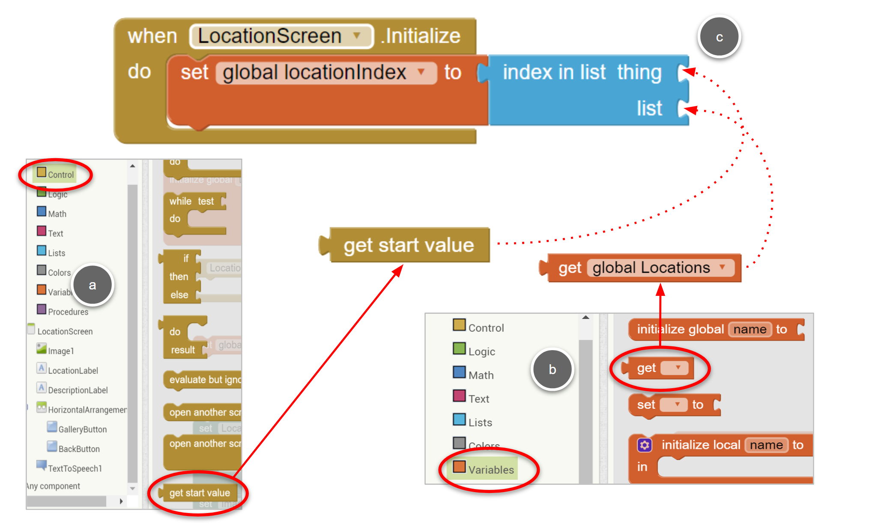Set LocationLabel
Now we use locationIndex to point to the correct Location, Description, and Picture items in our three lists!
Start with the Set LocationLabel.Text block, snapping it in below set global locationIndex.

Duplicate LocationLabel
Let’s do the same for the Description. Let’s make it easier by duplicating the block we just made.

Set DescriptionLabel
Change LocationLabel to DescriptionLabel, and Locations to Descriptions.

And snap it into LocationScreen.Initialize, below set LocationLabel.Text.
Set Image.Picture
Let’s also set the Image.Picture to the correct Picture. We can’t Duplicate the entire block so drag out out set Image1.Picture.
Duplicate just select list item this time, and change Locations and to Pictures.

And snap the block into LocationScreen.Initialize, below set DescriptionLabel.Text.
Add TextToSpeech
Let’s use the TextToSpeech component to have the app “speak” the description.

And snap it in to LocationScreen.Initialize, below set Image1.Picture.
Last Button!
One more button and we’re finished with this screen!
Complete the when BackButton.Click block.

Test your app with the MIT AI2 Companion!
Long click on each of your markers and see that the LocationScreen opens, displays the correct description and picture, and the correct description is read aloud.
Try the Back to Maps button to make sure you can go back and forth between the first two screens.

Now that you're done, please complete the Post Tutorial Check-In.
Malden Tour Guide: Challenge
Gallery Screen
The GalleryScreen will allow users to take pictures of the sites to add to a Gallery!
Go to the GalleryScreen.

Switch to the Designer.

Identify Components
With your partner, look at the user interface and see if you can identify what each component does. See the screen layout below.

Add to LocationScreen
Let’s go back to LocationScreen and add the button and code to open the GalleryScreen.

GalleryButton
Select GalleryButton in the Components panel, and click on the Visible checkbox to make it visible.

Add Blocks
Switch to the Blocks Editor.

In the when GalleryButton.Click event, open the GalleryScreen.

Go back to GalleryScreen
Drag out a CameraButton.Click event.

Camera Button
When we click the Camera button, the Camera should take a picture.

After Picture
When a picture is taken, the Camera.AfterPicture event is triggered.

After Picture
Set Image.Picture to the image the camera just took.
Hover over image and snap it into set Image1.Picture.

Test the Camera feature!
Take a picture, and see that the image changes.

About TinyDB

TinyDB is a component that stores persistent data--so it saves data even after we close the app for the next time we use it. It stands for “Tiny Database”.

TinyDB has two main functions: StoreValue and GetValue.
StoreValue stores a value, replacing whatever was in the database before. The name of the value is tag and the new value is valueToStore.

tag is like a variable name.

valueToStore is like a value of a variable.

GetValue fetches a value from the database that we stored before, by its tag. If there's no value stored, then it returns valueIfTagNotThere.

photoList
Let’s make our app more versatile, by allowing users to take many pictures and save them to the Gallery! We’ll use photoList to store the images in the app, and TinyDB to store the list so it can be retrieved each time the user runs the app.
Initialize two new variables. Name them and set them as seen below.

Add Image to photoList
When a picture is taken, let’s add the image to our photoList.

Update currentIndex
Update currentIndex to point to the end of our list, by setting it to the length of the list.

Store in TinyDB
Store the updated list in TinyDB.

Snap TinyDB1.StoreValue in after the set global currentIndex block.
Initialize Screen
Because we are storing photoList to TinyDB, we need to get it from TinyDB each time we open the screen. Let’s do that in the GalleryScreen.Initialize event.
Drag out a GalleryScreen.Initialize event.
Set currentIndex to 0.

Get photoList
Get the photoList from TinyDB. If it’s not stored there, default to an empty list.

Check List
We need to check if we have anything in our list yet.
Drag out an if-then block. Snap in blocks to check if the list is not empty.
If it’s not empty, point to the first photo, index 1.

Set Picture
Set Image.Picture to the item in the list at that index.

Previous and Next buttons
Now let’s code the PreviousButton and NextButtons. We need to update currentIndex, by either adding or subtracting to go back or forward in our list of photos.
Previous Button
Drag out a PreviousButton.Click block.
If we’re not at the front of the list (index > 1)...

Previous Button
...Then subtract 1 from the index.

Set Picture
Set Image1.Picture to the photo at the new index.

Next Button
Do you think you can figure out the NextButton.Click event?

Back Button
The BackButton works the same as it did in the LocationScreen.

Here we go!
Test out your app with the MIT AI2 Companion.
- Go to the GalleryScreen.
- Take some pictures.
- Scroll through your pictures with the Previous and Next buttons.
Map Crowdsourcing: Part 1
Introduction
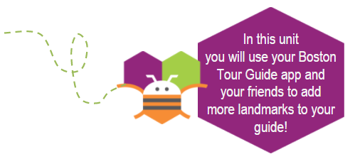Under the File menu, select Save As and save the project as "MaldenTourGuide_Crowdsource".
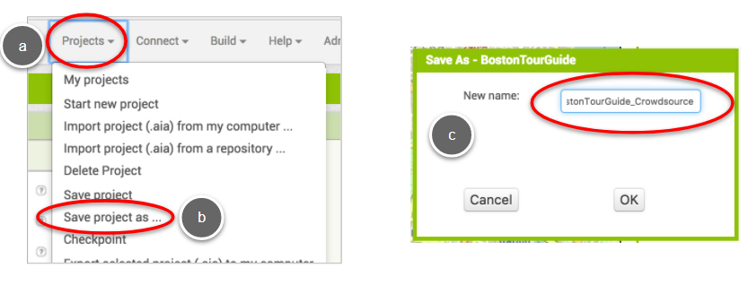Sharing
Share your project with your partner.
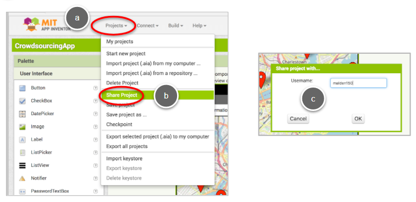 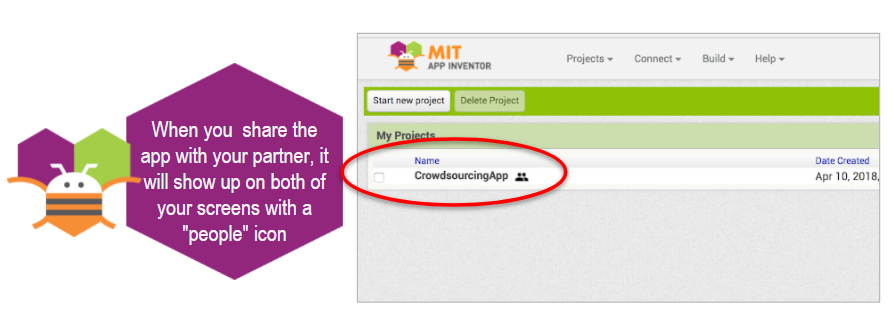 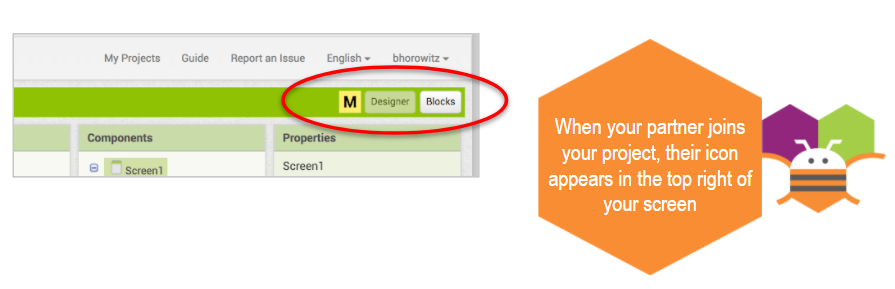 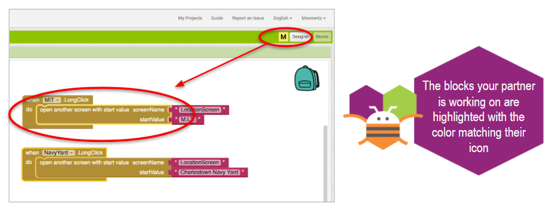Add Components
In the Designer window, add a Button above the Map, naming it AddMarkerButton.
Then add a Notifier component from the User Interface Drawer, and a CloudDB component from the Experimental Drawer.
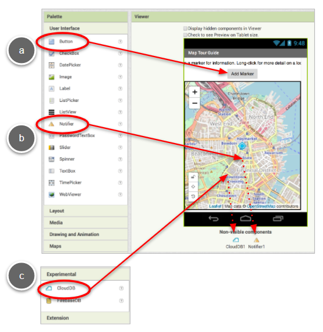CloudDB "Sharing Token"
In order to share the same CloudDB with your partner, you will both have to have the exact same CloudDB Token in your project. Even though you are sharing the same project, you have to use a special token.
Open this spreadsheet, and find your name in the list in Column A. Highlight the CloudDB token in Column B and copy it. Make sure you have the entire token highlighted.
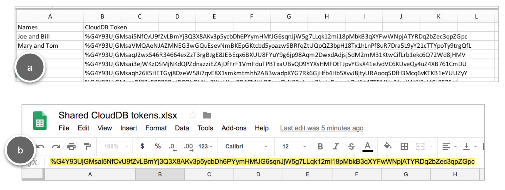Go back to your project in App Inventor. Click on CloudDB1 in the Components list, and paste the copied token in the Token field. 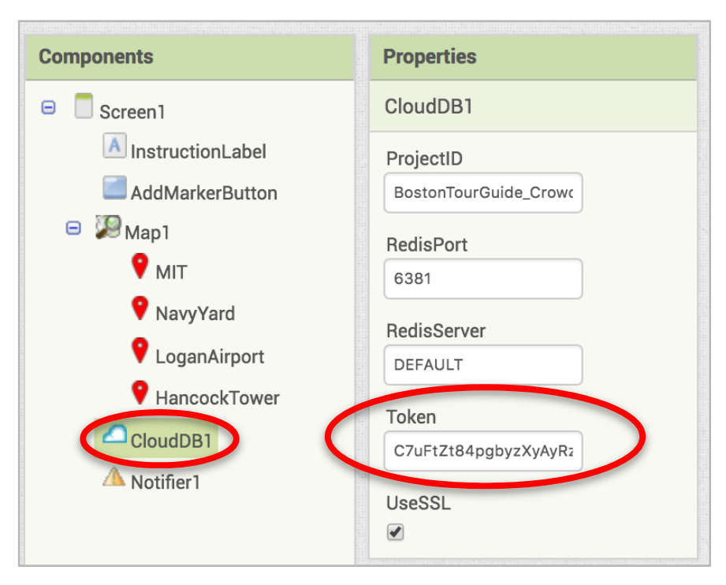
Add Marker Button
When the user clicks on the AddMarkerButton, use the Notifier component to display a dialog box, asking them whether they want to add a marker at their location, or do they want to pick a location on the map to add.
Drag out a when AddMarkerButton.Click event block.
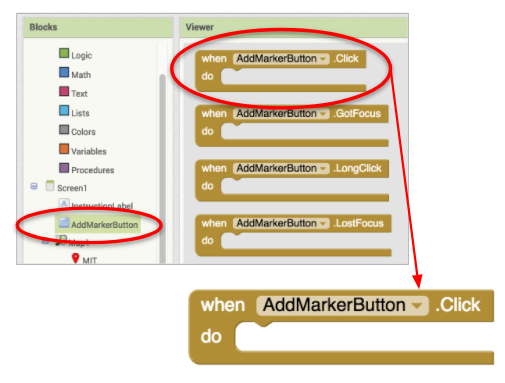Add Marker Button
Drag out a call Notifier.ShowChooseDialog block from the Notifier drawer, and fill in the slots with the appropriate text blocks.
- Set message to Do you want to add your current location or pick a location on the map?
- Set title to Add a Marker.
- Set button1Text to My Location.
- Set button2Text to Specify on Map.
After Choosing
When the user makes their choice with Notifier, an event called AfterChoosing is triggered.
Drag out the AfterChoosing event block.
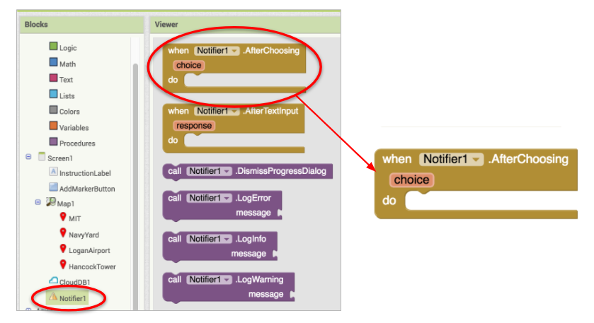After Choosing
Add an if-then block to test which choice the user made.
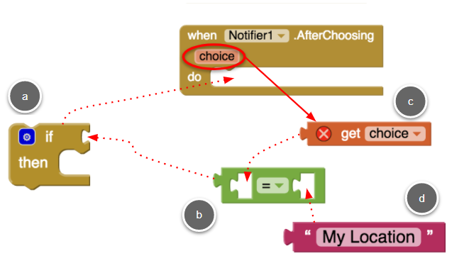Check GPS
Let’s make sure that the user’s position is registering on their device. Sometimes the GPS doesn’t function well, and the user’s latitude and longitude register as (0,0).
Add another if-then block and snap it into the then part of the first if-then block.
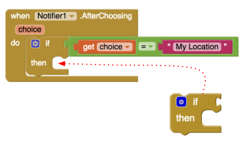Check GPS
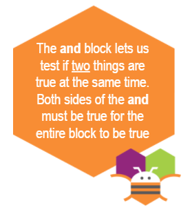Add an and block from the Logic drawer.
Snap the Logic = block into both sides of the and block.
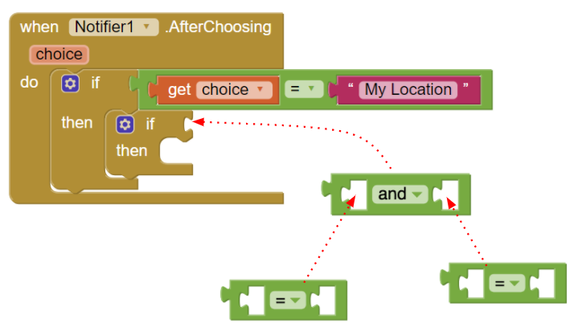Check GPS
From the Map1 drawer, drag out a Map1.UserLatitude and Map1.UserLongitude block, and test if both are equal to zero.
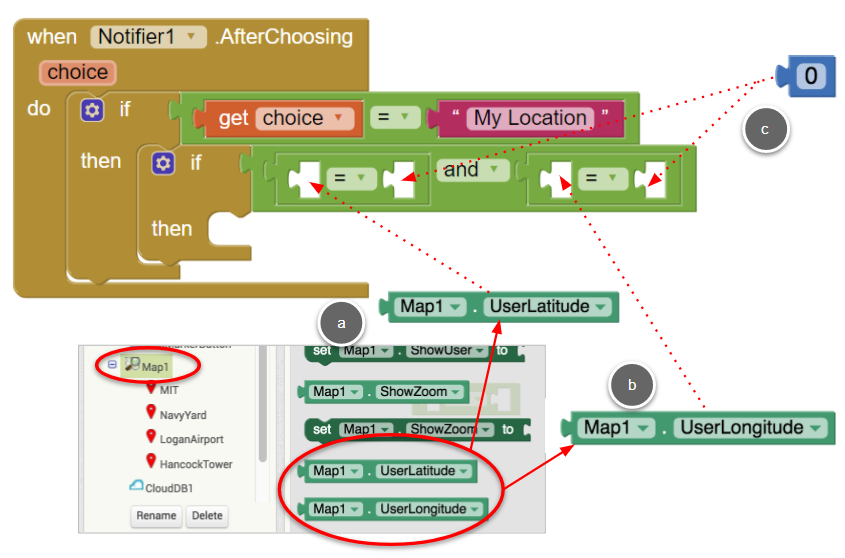Check GPS
If the user’s location does not register, let them know with a Notifier message.
Add the following with text blocks:
- Your location is not registering. Try again, but choose 'Add a Marker' to set the location.
- Error
- OK
After Choosing
Now add an else to the if-then so we can handle when the user's location is registering.
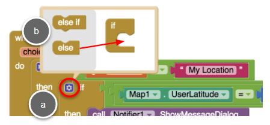After Choosing
From the Control drawer, drag out an open another screen with start value block and snap that into the else part of the if-then-else block.
screenName is AddMarkerScreen
For startValue, let's pass a list that contains the user's latitude and longitude.
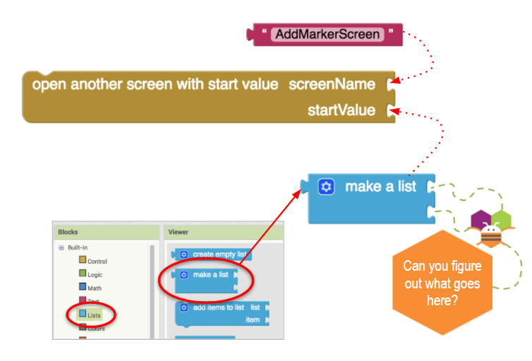Specify on Map
The second choice from the Notifier, "Specify on Map", will let the user click somewhere on the map to add a marker at that spot.
Add another if-then block, testing for the second choice from the Notifier message dialog.
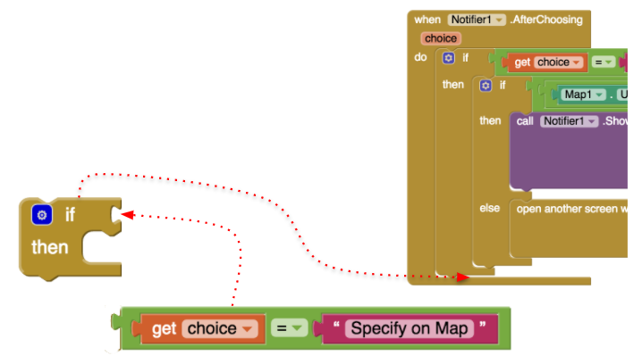Specify on Map
We need to let the app know to wait for the tap, and when it happens, it should add a Marker at that spot.
To do that, we’ll add a new variable, call it addingMarker, and initialize it to false. This means, we’re not currently adding a marker. 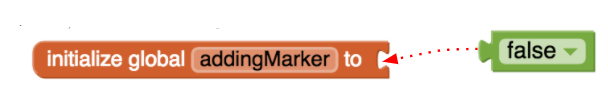
Adding Marker
However, in our Notifier1.AfterChoosing block, if they choose “Specify on Map”, we want to set addingMarker to true, which means, hey, we’re adding a marker, so wait for it.
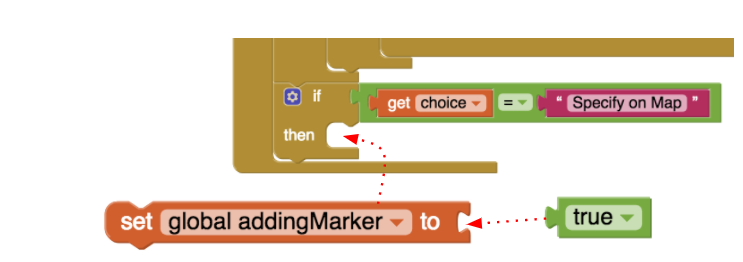Show Alert
Then, use Notifer1.ShowAlert to tell the user to go ahead and tap on the map to add the marker.
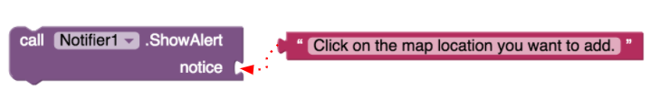Tap At Point
Now we need to catch the event where the user taps on the map to add their location.
Drag out a Map1.TapAtPoint block from the Map1 drawer. Note that its parameters are the latitude and longitude of where the user has tapped/clicked.
Drag in another if-then block.
Check first if we've set the addingMarker variable to true. Otherwise, we can ignore the tap event.
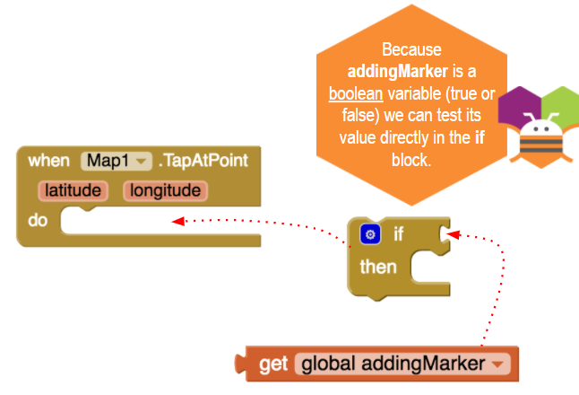Tap At Point
In the then slot, set addingMarker to false, because they've done it already.
Tap At Point
Now, open the AddMarkerScreen, passing the latitude and longitude of the location the user click as a list for startValue.
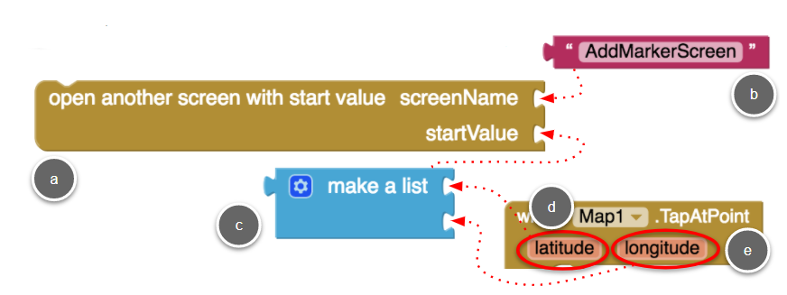Add Marker Screen
Let's add the second screen, where the users will add the marker information, including a title and a description.
Click the Add Screen button on the top menu bar, and name the new screen AddMarkerScreen.
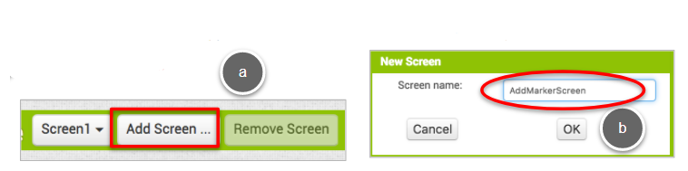Add Marker Screen
Add the following components to AddMarkerScreen. You can adjust the layout if you wish. This layout uses a TableArrangement (from the Layout Drawer), with with 2 colums and 4 rows.

Add Marker Screen
Switch to the Blocks Editor and let's code this screen!
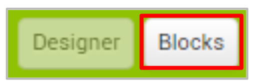We will store all of our Markers in a list in CloudDB. We need to access that list to add to it on this screen, so let’s initialize 2 variables:
- One for marker information we are going to add to CloudDB
- One for the Markers tag we’ll use to get the full list from CloudDB
Initialize Screen
Remember that we passed the latitude and longitude the user wants to add in the startValue when opening this screen.
Let’s add an AddMarkerScreen.Initialize block to grab that information as the screen opens.
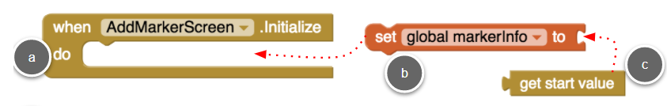Set Lat/Long Labels
Set the Latitude and Longitude labels to display the values passed in startValue.
Remember that we passed it as a list, so use select list item to get the values.
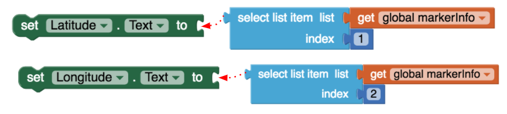Get Markers
Finally, get the latest markers list from CloudDB.
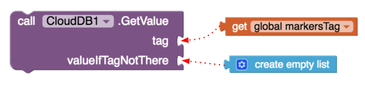Submit Button
When the user presses the Submit button, we want to add the marker information to our list on CloudDB. But first, let's make sure we have good information!
Drag out a SubmitButton.Click event block.
Add an if-then block, and the mutate it to make it an if-then-else block.
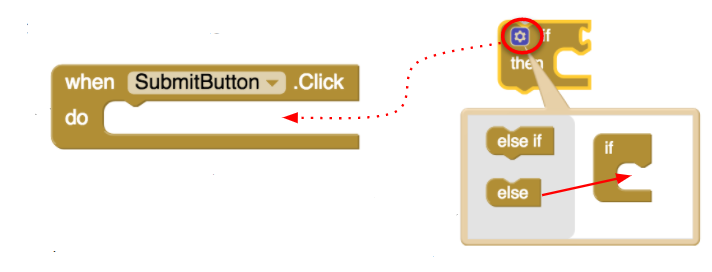Submit Button
We want to check if the information is valid. Let's do it by checking for invalid input.
- latitude and longitude are both zero
- OR title is not filled in
- OR Description is not filled in
Using a combination of these blocks, add a condition to the if socket to test if it's invalid.
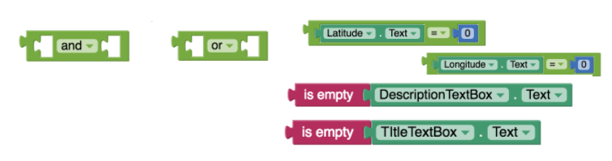Submit Button
If the input information is invalid, let the user know with the Notifier.
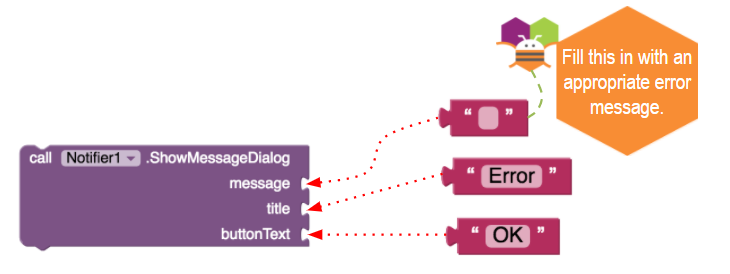Submit Button
Let's cover the else case, where all the information is valid. We need to add the informatin as a new marker in our list that is stored in CloudDB.
Recall that we already have the latitude and longitude for the new marker stored in markerInfo.
Add the title and description from the corresponding TextBoxes to markerInfo.
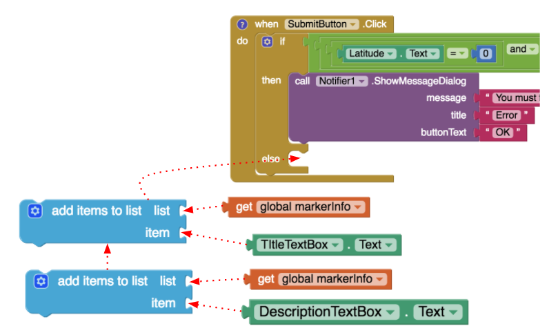Submit Button
Append markerInfo to the markers list that is stored in CloudDB.
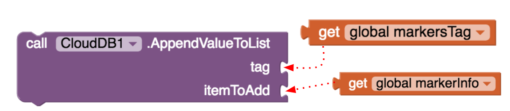Close Screen
After that, close the screen to return to Screen1.
Code the BackButton.Click event to also close the screen.
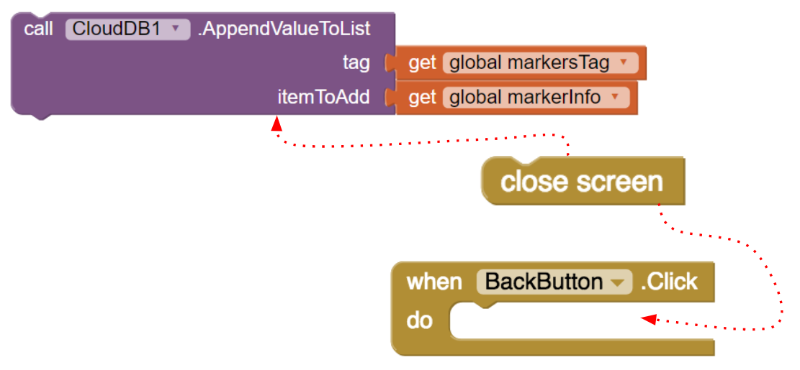Map Crowdsourcing: Part 2
Start Here
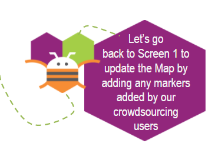Wait until your partner shares their MaldenTourGuide_CrowdSource project with you. Then open it from your project list.
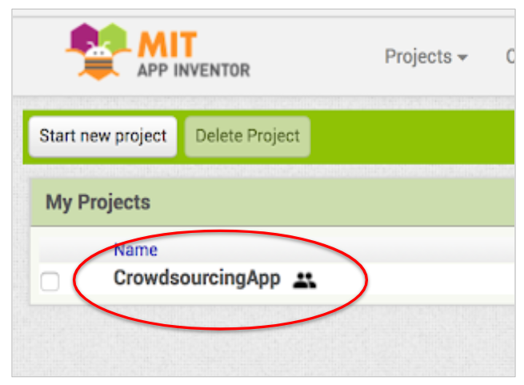CloudDB "Sharing Token"
In order to share the same CloudDB with your partner, you will both have to have the exact same CloudDB Token in your project. Even though you are sharing the same project, you have to use a special token.
Open this spreadsheet, and find your name in the list in Column A. Highlight the CloudDB token in Column B and copy it. Make sure you have the entire token highlighted.
Go back to your project in App Inventor. Click on CloudDB1 in the Components list, and paste the copied token in the Token field.
App Initialization
Each time we open the app, there is a chance that other users have added new markers, so we need to check CloudDB to get the latest set of markers to display.
Open the Blocks Editor of Screen1.
Initialize a new variable that will hold the list of all markers for our map.
Initialize the variable MarkerTag, the same as we used in AddMarkerScreen.
Screen Initialization
Drag out a Screen1.Initialize block.
Initialize addingMarker and MarkerList variables. 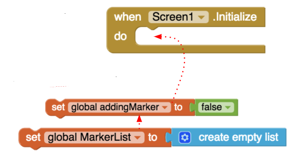
Ask CloudDB for the latest list of markers.
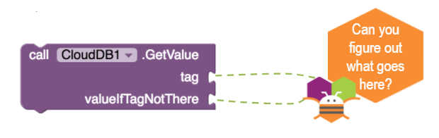Update Markers
During the last step, in Screen1.Initialize, we called CloudDB1.GetValue to get the latest list of markers.
We need a CloudDB1.GotValue block to retrieve the value. This block will trigger once CloudDB responds to the request.
Add an if-then block to make sure the tag is the right one.

Update Markers
At any point, a user could add a marker, so we also want to include a CloudDB1.DataChanged block and update our markers there, too.
Duplicate the if-then block from CloudDB1.GotValue and snap it into CloudDB1.DataChanged.
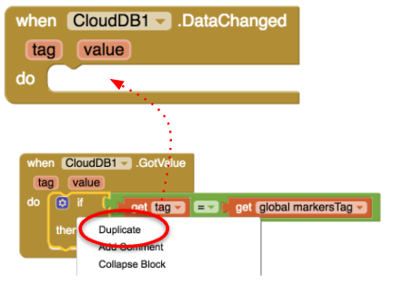Update Markers
There is quite a bit involved in updating the markers, and we need the code in two places (GotValue and DataChanged), so let's make a new procedure to update the markers.
Drag out a procedure block, name it UpdateMarkers, and add an input called value.
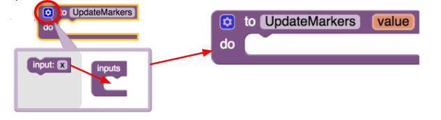Local Variables
From the Variables drawer, pull out an initialize local variable and name it markersData.
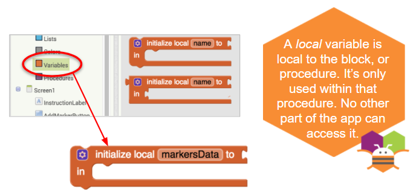Update Markers Procedure
value will be a list of markers.
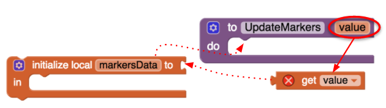Update Markers Procedure
We want to look at each marker in the list and add it to our map, one by one. In other words, we want to see each marker from the list, one at a time.
From the Control drawer, drag out a for each item in list block. Change item to marker.
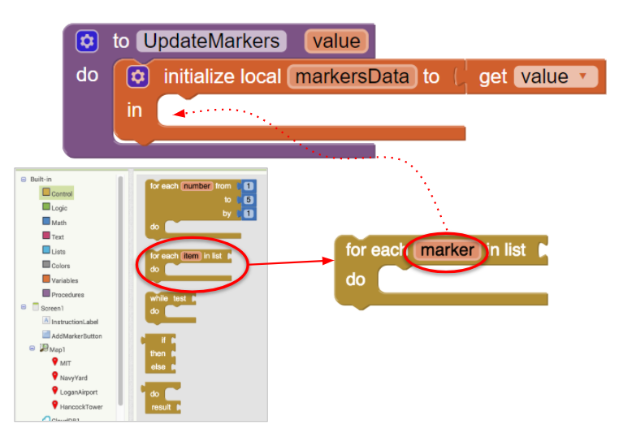Update Markers Procedure
Add markersData as the list in the for each block.
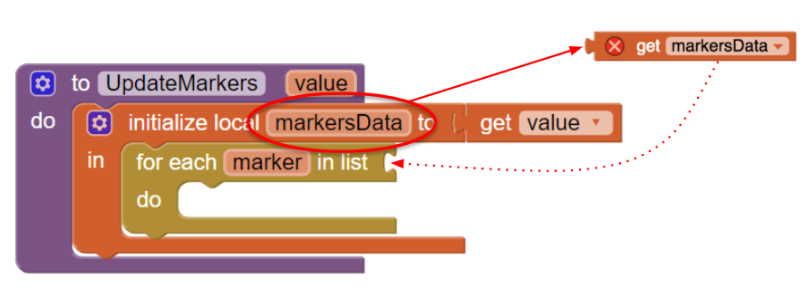Update Markers Procedure
Add another local variable inside the for each block, and name it newMarker.
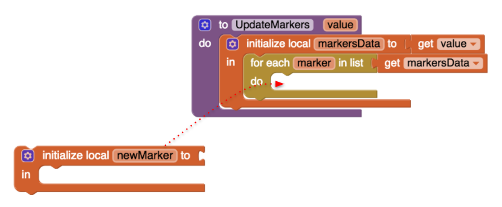Create Marker
From the Map1 drawer, drag out a Map1.CreateMarker block to create a new marker for the map.
Lat/Long for New Marker
Remember that marker is a list with all the information the user entered for the added marker. Latitude and Longitude are the first two items in the list. Use select list item to get Latitude and Longitude as input to CreateMarker.
Marker Title
We need to use the Any Component feature of App Inventor to set the Title of the new marker.
Marker Description
Set the Description in the same way you set the Title. But remember, the description is the fourth item in marker.
Marker Infobox
Make sure the Infobox is enabled for the marker, so when users click on the marker, the infobox appears.
Add to Global List
Now that we've created our marker completely, add it to the global list of markers.
Helper Procedure
Now, we have a procedure to update our markers. But what if the marker already exists?
Since we’re asking for the full list of markers, we want to make sure we don’t already have the marker in our list, which could happen if we’ve had the app open on our device. Let’s make another procedure to check if a marker already exists.
Drag out a procedure block, but one that returns a result. We'll make a procedure called MarkerExists? that returns either true (the marker exists) or false (the marker does not exist). Add an input called marker.

Add a Local Variable
Initialize a local variable, found, to false.
Notice that there are two types of local variables, one that returns a value and one that doesn't.
Do Block
Now, add a do block to allow us to return the result (the value of found).
Marker Exists?
We will look through the entire list of markers to see if we have found the input marker.
Drag a for each item in list block from the Control drawer, and snap a new if-then block in.
We are iterating over the entire list of markers, so snap MarkerList into the for-each loop.
Marker Exists?
We need to check if the marker's Latitude AND Longitude are the same for the item in the list.
We'll need an and block, and two = blocks from the Logic drawer.
Test Latitude
We need to use the Any Component feature to get the Latitude of the input marker.
Test Latitude
We are comparing the input Marker's Latitude to the item's Latitude. Remember we put Latitude and Longitude in a list for each marker. Latitude is at index 1 of item.
Test Longitude
In the right side of the and block, test if the input marker’s Longitude equals the item’s Longitude. Longitude is stored in index 2.
Marker Exists?
If the latitude and longitude match, set found to true.
Then, return found as the result.
Marker Exists?
MarkerExists? will return true or false, depending on whether the marker exists or not. We want to call MarkerExists? in the UpdateMarkers procedure, before we create a new marker. We only want to create the new Marker if the marker does NOT exist already.
Drag out an if-then block. Don't snap it in anywhere just yet.
From the Logic drawer, drag out a not block, and snap it into the if socket. not tests for not true, or, false.
Snap MarkerExists? to the not block.

Update Markers
Let's insert the new if block into UpdateMarkers.
Last Step!
The last thing we need to do is call UpdateMarkers from CloudDB1.GotValue and CloudDB1.DataChanged.
Test Your App!
Add a marker by either tapping a location on the map, or adding your own location. Make sure the markers, with the corrent Title and Description, appear on the map. Closing the app and re-opening it should preserve all previous markers.